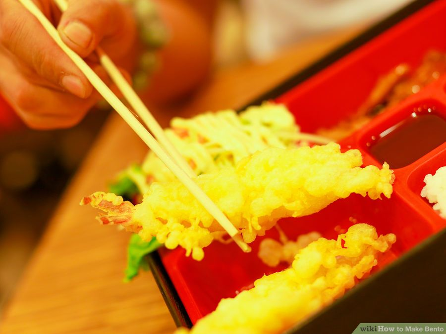

Divide the meal proportionally. When preparing bento, there are two ways
to divide the food. You can stick to a 4:3:2:1 ratio (4 parts of rice,
3 parts of the side dish, 2 parts of vegetables, and 1 part of a serving
of pickled vegetables or a dessert) or you can make a 1:1 ratio
(1 part rice, 1 part side dishes, where the side dishes themselves contain
a 1:2 ratio of meat to vegetables). You can follow one of these traditional
layouts, or you can vary the ratio and substitute more familiar ingredients.
The objective is to have a nutritionally diverse yet balanced meal.
Obtain a bento box which is divided into compartments reflecting the proper
bento ratio. You may be able to find a bento box in an Asian food store or
online. Keep in mind that in Japan, food portions are smaller than in the
West. (This might be a good thing if you're trying to control your portion
sizes, or it might be an inconvenience). If you can't find a bento box
anywhere, you can improvise by using a square container and dividing the
food creatively (e.g. with a dividing wall of baby carrots or saltine
crackers). Muffin and cupcake cups also make great compartments.
Choose brightly colored food items. The bolder and more solid the color,
the greater the visual impact of your bento, and the more nutritional
benefits are conferred (at least when it comes to brightly colored
vegetables; see the citations below). White rice, whole hard-boiled eggs,
and cheese can add a nice contrast to your bento, especially when paired
with bright orange, green, and red foods.
Pack the foods tightly in order, especially if your bento box does not have built-in compartments. This will prevent the food from shifting within the box.
Rice (or other starch) is nearly half the meal.
Food items that are awkward in terms of shape or arrangement (e.g. a piece of chicken or a large dumpling) might have to go in first.
Food items that are flexible, such as potato salad or cut vegetables go in any large remaining spaces.
Small and sturdy items, like cherry tomatoes or small pudding containers, should fill in the gaps and accent the bento.

Create striking patterns and shapes with the food items and/or seasonings by using stencils. You can also decorate your bento according to a theme. You can also paint using food colouring mixed with Cream Cheese, Butter, Sour Cream, or frosting.
Keep the edges neatly defined. Contrasting colors, textures and shapes should be placed next to each other, but similar ones should be separated. Don't let clashing flavors mingle (e.g. don't put fried rice next to a pastry).
Make animal faces or other shapes with the food. Two slices from a hard-boiled egg with a dot of paprika in the middle of the yolk can make a great pair of eyes.
Sprinkle seasonings and add garnish to emphasize the center of a section of food.
Cut fruit, vegetables, cheese and kamaboko (pureed white fish shaped into a loaf) into shapes like stars, hearts, and diamonds with cookie cutters.
Put sauces or loose snacks into quirky containers. Small refillable sauce bottles made especially for bento can be purchased online.